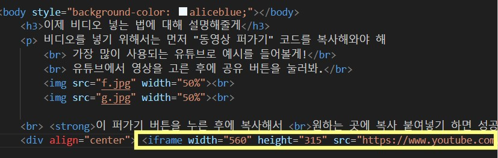

비디오를 넣기 위해서는 먼저 "동영상 퍼가기" 코드를 복사해와야 해
가장 많이 사용되는 유튜브로 예시를 들어볼게!
유튜브에서 영상을 고른 후에 공유 버튼을 눌러봐.
이 퍼가기 버튼을 누른 후에 복사해서
원하는 곳에 복사 붙여넣기 하면 성공!
이제 우리가 작성한 코딩에서 비디오를 넣은 것을 보여줄게

영상을 넣을 때 가운데 정렬 하고싶다면 사진처럼 [div align="center"][/div] 코드를 이용하면 돼
영상까지 다 넣었다면 다시 HOME으로 돌아가서 마무리 해볼까?
SSWC HOME으로 돌아가기